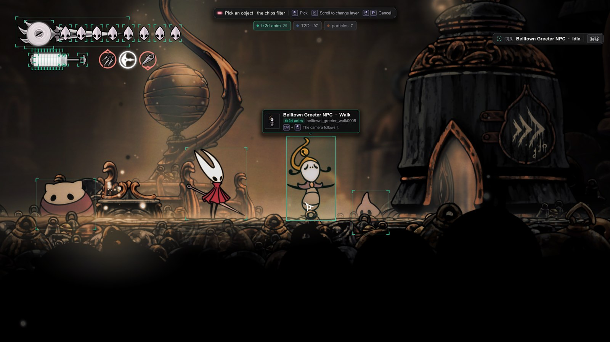
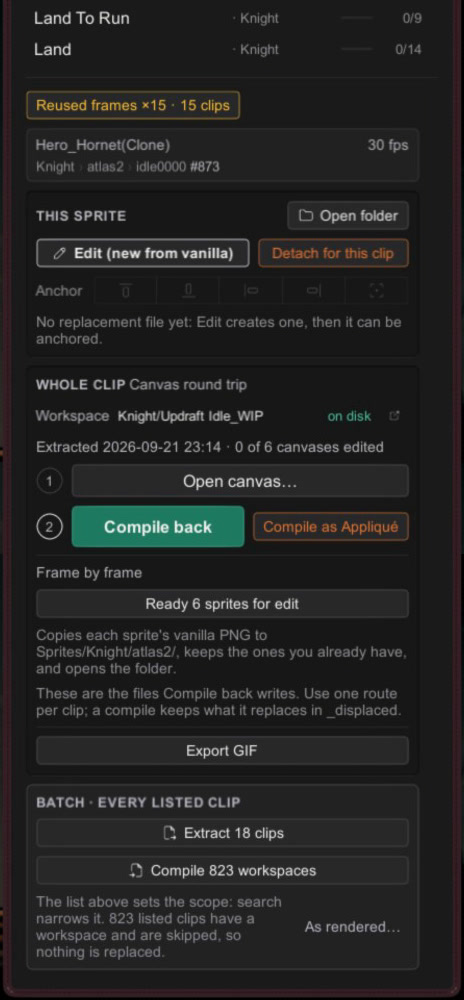

B8 The Animation Mode
Sprites · for creators.
Find an animated object, watch it frame by frame, and reach every sprite tool for it.
You never type an object's name by hand.
You'll be able to: point at a moving thing in the game and select it, browse its animations, see at a glance which are already skinned, and drive the whole edit, extract and compile workflow from one console.
Before you start: the basic dump-edit loop from B1 and the basics of finding sprites. This page tours the mode that those pages send you to.
Open Graphics (3, or the Graphics pull tab). Choose Animation in the mode row at the top of the Library panel.

The two panels
Graphics opens as two panels at the sides of the screen, so the character you're inspecting stays in view:
- Preview (left): the atlas, the current sprite drawn upright with its pivot, a backdrop control, the clip and frame readout, and the deck that steps the animation.
- Library (right): the mode row, then the object or clip list, then the console with the tools for the selected sprite and clip.
As with every Stitchwork panel, you can drag them, dock them to an edge, or roll them out of the way with a right click.
Finding your object
With nothing selected, the Library offers two ways in:
- Pick object in world, the big button at the top. Move the mouse over the game: an outline highlights the animated object under the cursor, with its name and current clip. Click to select it. The Library opens on its clips, with its current clip in view. Ctrl+click instead, and the camera follows the object; pick mode stays open. A right click cancels. The
Pkey starts the same pick from anywhere, for tk2d and T2D objects together (World Pick). To catch an exact pose, pause the game first with DebugMod's global pause. Hide DebugMod's panels with its toggle key, then press3(Hotkeys tells what happens while DebugMod's panels show). - The object list: every object that the game has animated since the scene loaded, each with a thumbnail and its current clip and frame. Objects that have stopped stay in the list, dimmed, so you can still inspect them.

Browsing an object's clips
Selecting an object turns the list into its clips. At the top, the picked row names the object and its rig collection, with Change (back to the object list) and Pick (pick again in the world). Then:
- Search clips filters by name; the count beside it shows how many are listed.
- Sort: Recent (the clips this object last played, newest first; usually "the move I just did"), A–Z, To-do (least covered first), or Frames (most frames first).
- Coverage on every row: a small bar and
n/N, the frames of the clip that already have a replacement. Hover for the detail, including which frames come from a pack and which files were not found. - An orange A on a clip that has per-clip art (Appliqué).
Click a clip to load it into the Preview panel and the console. The live object switches to it and pauses at its first frame.
Same name, different rig. The picked row names the tk2d collection the clips draw from: that name is also the
Sprites/folder your files go in. It matters because the game reuses objects and clip names across rigs. During the jailbreak sequence, cloakless Hornet runs on the sameHero_Hornetobject with the same clip names ("Idle", "Airborne"), but a different collection,Hornet Cloakless Cln, so her jailbreak skin lives inSprites/, not the regular Hornet folders. When a clip draws from a different collection than the rest of the list, a collection column on its row names it.Hornet Cloakless Cln/
Windy variants cause the same problem. In windy regions the game swaps to a hidden second animation set whose clips reuse the same names ("Needolin Play") but draw from windy collections (
Hornet_Needolin_Windy). The hero's clip list includes these, and when two rows share a name, both show their collection, so the pair reads as deliberate variants. A crest can also bring its own clip with the same name as one of Hornet's, from the same collection; those rows show the name of their animation set instead. Click one, and the console and its Whole clip steps use exactly that variant. Playing a windy clip previews windy animation anywhere, no wind required. Cloakless works the same way: the hero's list includes the jailbreak rig's clips whenever you're in the Slab region.

little bomey @everydruidwaswr · Apr 30
you must become angry, at your anger
The Preview panel
- Atlas: the whole packed sheet, with the current sprite's region outlined.
- Sprite: just the current frame, drawn upright as it appears in the game, with a magenta ⊹ marking the pivot. Step through the frames and watch the pivot: if it stays on the same point of the character, the frames align.
- Backdrop: a dark or light surface behind both views, so transparent art reads clearly. The swap button flips it, and the slider sets its strength. T2D Textures shares the setting.
- Readout: the clip, the frame (
FRAME 04/06), and one tick per frame. Click or drag along the ticks to go to a frame. This pauses the object.
The deck
Five keys under the readout. The four transport keys act on the live object and show their hotkey on the keycap; the defaults are in Hotkeys.
| Key | Does | Default hotkey |
|---|---|---|
| Prev | Step back one frame. | PageUp |
| Pause | Pause the object's animation. Lit while paused. | Insert |
| Next | Step forward one frame. | PageDown |
| Freeze | Hold the object at its current position. Its animation continues. Lit while frozen. | Delete |
| Loop | Loop the clip in the Preview panel at 12 fps. The object in the game does not change. Press again to stop. |
A step (Prev or Next) pauses the object first. Loop always plays at 12 fps, so you can compare clips at one rate: the game sets the true speed of a clip only when it plays the clip. On a stopped object, stepping browses the last snapshot, and Pause and Freeze are disabled.
While you pause, the game can ask the object for another clip. Release the pause, and the object plays the clip that the game asked for. A world pick ends a pause and a freeze: the new object starts with neither.
The console
Under the clip list, top to bottom:
- The reuse line. "Reused frames ×N · M clips" when the sprite appears elsewhere. Click it to narrow the clip list to exactly those clips; click the "Reusing this sprite" chip to see them all again. "Only used here — safe to edit in isolation." means an edit touches nothing else. See Reused Frames.
- The identity card: the object, the clip's authored rate (
12 fps), andcollection › atlas › sprite #id. When the game is running the clip at a different speed, the live rate shows too (12 fps → 30 live). To see a clip at its true speed, trigger it in the game. - This sprite:
- Edit opens the sprite's file in your image editor. It reads Edit (opens your file) when you already have one, and Edit (new from vanilla) when it will first write the vanilla sprite to your working folder.
- Detach for this clip makes this frame's art unique to this clip (Appliqué).
- Anchor: five buttons that set the anchor of your replacement by renaming the file. They work only when the file is in your working folder. For a sprite that a pack supplies, the buttons are off, and the line under them names that pack.
- Open folder opens
Sprites/<collection>/in your file browser.
- Whole clip, the Animation Canvas round trip in two steps: Open canvas (this extracts the clip to a workspace), then Compile back (or Compile as Appliqué). The workspace line shows the
<collection>/folder and whether it is on disk. Under the steps, Ready N sprites for edit copies the vanilla PNG of each distinct sprite in the clip to your working folder, for frame-by-frame work, and Export GIF writes<clip>_WIP Showcase/<clip>.gif, with Open folder beside the result. - Batch: extract a canvas for each listed clip that has no workspace yet, or compile back each listed clip that has one. The list's search and the reuse line set the scope. Roll the Library while a batch runs, and its rolled title shows the progress.

Where to go next
- Finding Any Sprite: names, collections, and the lookup discipline.
- Anchors: placing an enlarged replacement.
- Animation Canvas Workflow: the round trip that Whole clip drives.
- Reused Frames and Appliqué: sharing art across clips, and giving one clip its own.